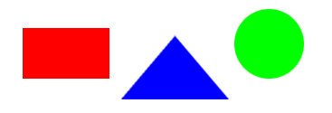

Image maps
Een image map is een afbeelding die opgedeeld is in gebieden die als
hyperlink functioneren. Officieel zijn er 2 types, nl.
server-side image maps en client-side image maps.
De 1e hebben, zoals de naam al zegt, de webserver nodig (via zgn.
cgi-script); daar besteden we in deze module verder geen aandacht
aan. Client-side image maps worden via de browser
'bestuurd'.
Om van een afbeelding een (client-side) image map te 'maken'
moet je 3 dingen doen:
- Je moet aan de img-tag het usemap-attribuut toevoegen
met als waarde de naam van de "map" die aan de afbeelding
gekoppeld moet worden. Deze map moeten we nu gaan definieren.
- Je neemt de map-tag op met daarin het
name-attribuut dat je dezelfde waarde geeft als je zojuist
hebt opgegeven in het usemap-attribuut van de image-tag.
- Binnen de map-tag neem je zo vaak als je nodig hebt de
area-tag op waarmee je een deelgebiedje definieert van de
map via o.a. een shape-attribuut (rectangle, circle of
polygon) en een coords-attribuut (de coördinaten van
het deelgebied). Daarnaast kent de area-tag o.a. nog een
href-attribuut om de gekoppelde url aan te kunnen
geven.
Laten we een voorbeeld geven waarmee e.e.a. duidelijker zal
worden. We hebben in ieder geval een plaatje nodig, in dit geval
mapsample.gif, dat we in dezelfde directory plaatsen als dit
html-bestand.
We voegen de volgende html-code in:
<img src="mapsample.gif" width="367" height="125" usemap="#samplemap">
<map name="samplemap">
<area shape="rect" coords="24,30,120,87" href="mapsample1.html">
<area shape="poly" coords="135,109,193,39,252,109" href="mapsample2.html">
<area shape="circle" coords="297,48,38" href="mapsample3.html">
</map>
Het effect daarvan is als volgt:

De area-tag kent echter nog meer attributen, waardoor we nog wat meer
mogelijkheden hebben met o.a. meer feedback naar de
gebruiker:
Opmerkingen:
- Zoals vaker, reageren Verschillende browsers verschillend op
enkele tags en/of attributen. Zo ondersteunt IE de attribuutwaarde
shape="default" niet; kijk maar eens naar de code
van bovenstaand voorbeeld.
- Hoe maak je image-maps? Dat kan met allerlei programma's:
Paint, Dreamweaver, IrfanView, Mapedit, enz.